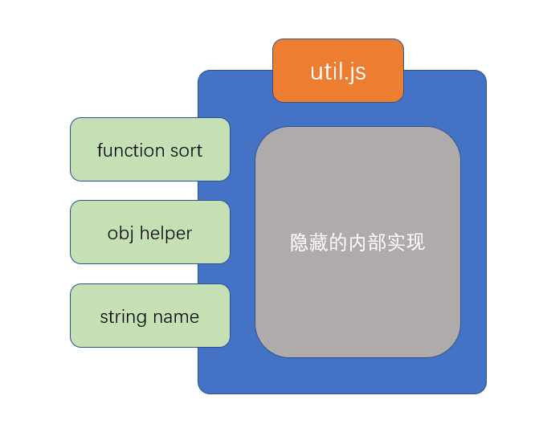

CommonJS
在nodejs中，由于有且仅有一个入口文件（启动文件），而开发一个应用肯定会涉及到多个文件配合，因此，nodejs对模块化的需求比浏览器端要大的多

由于nodejs刚刚发布的时候，前端没有统一的、官方的模块化规范，因此，它选择使用社区提供的CommonJS作为模块化规范
在学习CommonJS之前，首先认识两个重要的概念：模块的导出和模块的导入
模块的导出
要理解模块的导出，首先要理解模块的含义
什么是模块？
模块就是一个JS文件，它实现了一部分功能，并隐藏自己的内部实现，同时提供了一些接口供其他模块使用
模块有两个核心要素：隐藏和暴露
隐藏的，是自己内部的实现
暴露的，是希望外部使用的接口
任何一个正常的模块化标准，都应该默认隐藏模块中的所有实现，而通过一些语法或api调用来暴露接口
暴露接口的过程即模块的导出

模块的导入
当需要使用一个模块时，使用的是该模块暴露的部分（导出的部分），隐藏的部分是永远无法使用的。
当通过某种语法或api去使用一个模块时，这个过程叫做模块的导入
CommonJS规范
CommonJS使用exports导出模块，require导入模块
具体规范如下：
- 如果一个JS文件中存在
exports或require，该JS文件是一个模块 - 模块内的所有代码均为隐藏代码，包括全局变量、全局函数，这些全局的内容均不应该对全局变量造成任何污染
- 如果一个模块需要暴露一些API提供给外部使用，需要通过
exports导出，exports是一个空的对象，你可以为该对象添加任何需要导出的内容 - 如果一个模块需要导入其他模块，通过
require实现，require是一个函数，传入模块的路径即可返回该模块导出的整个内容
nodejs对CommonJS的实现
为了实现CommonJS规范，nodejs对模块做出了以下处理
为了保证高效的执行，仅加载必要的模块。nodejs只有执行到
require函数时才会加载并执行模块为了隐藏模块中的代码，nodejs执行模块时，会将模块中的所有代码放置到一个函数中执行，以保证不污染全局变量。
1
2
3(function(){
//模块中的代码
})()为了保证顺利的导出模块内容，nodejs做了以下处理
- 在模块开始执行前，初始化一个值
module.exports = {} module.exports即模块的导出值- 为了方便开发者便捷的导出，nodejs在初始化完
module.exports后，又声明了一个变量exports = module.exports
1
2
3
4
5
6(function(module){
module.exports = {};
var exports = module.exports;
//模块中的代码
return module.exports;
})()- 在模块开始执行前，初始化一个值
为了避免反复加载同一个模块，nodejs默认开启了模块缓存，如果加载的模块已经被加载过了，则会自动使用之前的导出结果